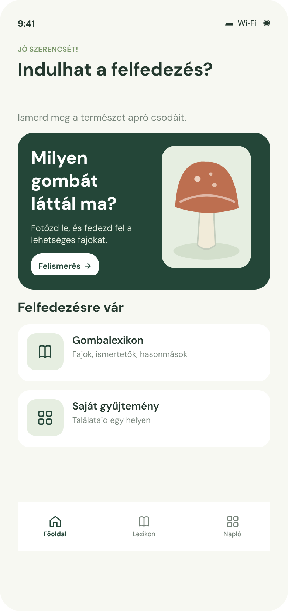
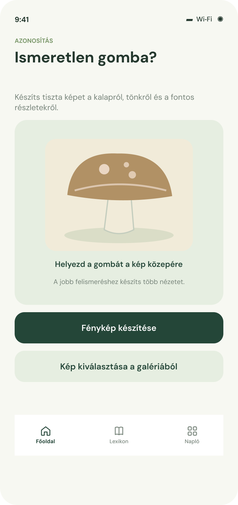
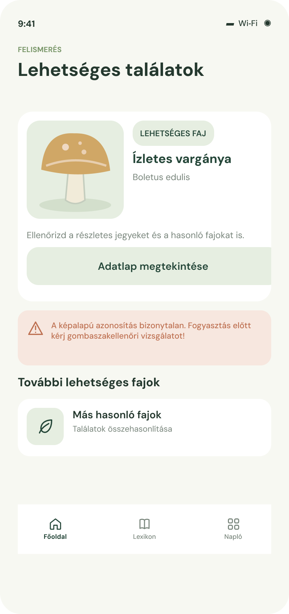
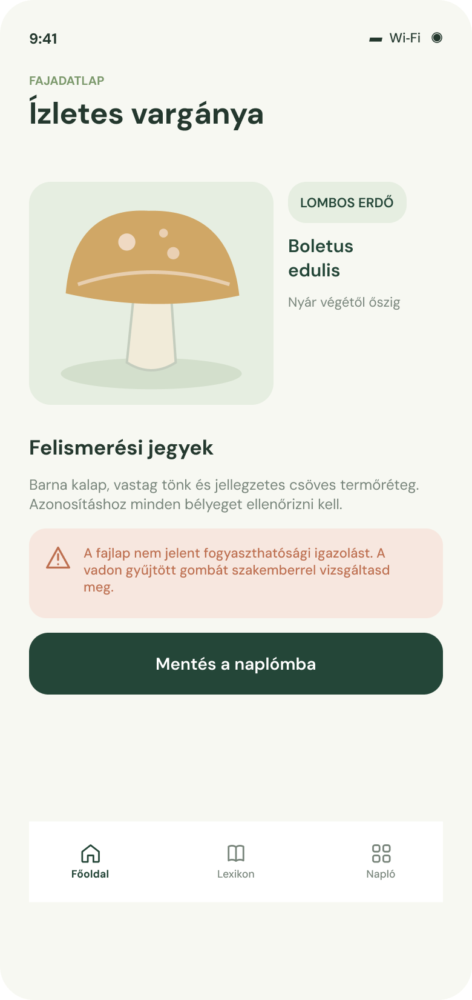
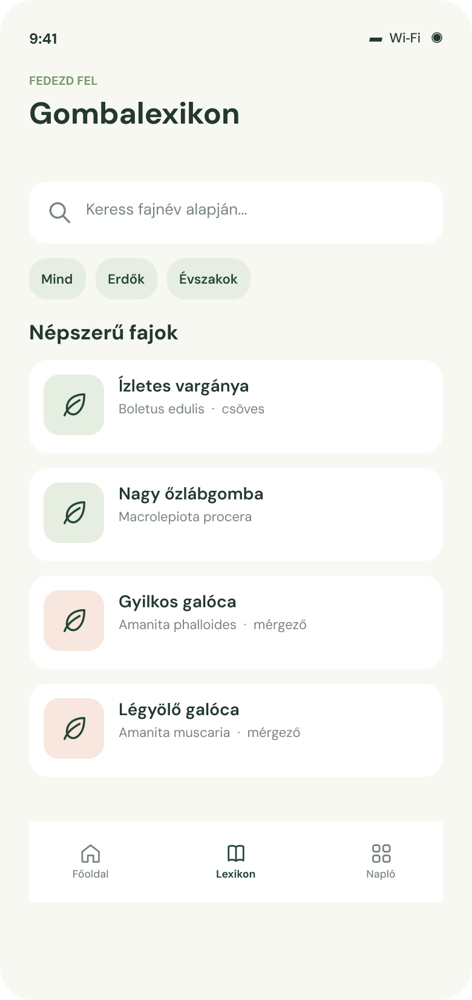
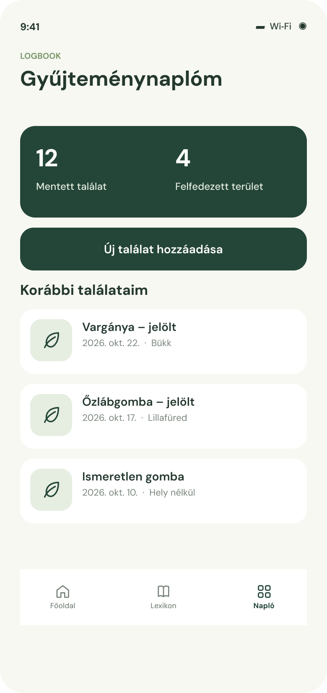
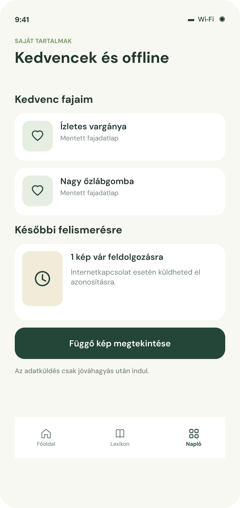

1. Az alkalmazás célja és használati feltételei
A GombAPP egy Androidra tervezett, magyar nyelvű gombahatározó és természetismereti mobilalkalmazás. A természetjárók és hobbi gombászok fényképek alapján előzetes fajazonosítási javaslatokat kaphatnak, böngészhetnek a gombák adatai, valamint saját fényképes gyűjteménynaplót vezethetnek.
1.1. Kinek és mire hasznos?
A kezdő érdeklődők egy egyszerű kereső- és felismerőfelületet használhatnak és gyűjthetik egy helyen a túrákon szerzett gombákat, míg a tapasztaltabb természetjárók akár a lexikonból is szerezhetnek számukra hasznos információkat. Az alkalmazás célja az ismeretszerzés és az élmények rendszerezése, nem pedig a fogyasztásra való alkalmasság tanúsítása.
1.2. Szükséges eszközök és engedélyek
Az alkalmazás Android telefonon fut. Fényképezéshez kamerára és annak engedélyezésére, képfelismeréshez és a friss lexikonadatokhoz internetkapcsolatra van szükség. Internet hiányában a fényképek helyben elmenthetők, az online felismerés pedig később indítható el.
FONTOS: Egyetlen képalapú találat sem igazolja, hogy a gomba ehető. Vadon gyűjtött gombát fogyasztás előtt képzett gombaszakellenőrrel kell megvizsgáltatni.
2. Telepítés, kezdőképernyő
Indítás után a főoldalon a „Milyen gombát láttál ma?” (1.ábra) kártya irányítja a felhasználót a felismeréshez. A képernyő alsó navigációján a Főoldal, Lexikon és Napló lapok választhatók.
A főoldali felismerés gombra kattintva az „Ismeretlen gomba?” képernyő jelenik meg (2. ábra). Itt a felhasználó útmutatást kap a pontosabb azonosításhoz, majd közvetlenül készíthet új fényképet vagy választhat egy meglévő képet a galériájából.


3. Gombafelismerés és a fajadatlap használata
3.1. Hogyan használd a képfelismerőt
- A főoldalon válaszd a „Felismerés” lehetőséget. (1. ábra)
- A „Fénykép készítése” gombbal nyisd meg a kamerát, vagy a „Kép kiválasztása a galériából” lehetőséggel adj meg meglévő fényképet. (2. ábra)
- Éles, jól megvilágított képet készíts a gombáról; ha lehetséges, mutasd meg a kalapot, a tönköt és a termőréteget is.
- Ellenőrizd a kiválasztott fotót; az online elemzéshez a képfeldolgozás jóváhagyása és internetelérés szükséges.
- Várd meg a lehetséges fajok listáját. (3. ábra)
- Vidd el a gombát hivatalos gombaszakellenőrhöz megvizsgáltatni!
3.2. Az eredmények értelmezése
A „Lehetséges találatok” (3.ábra) képernyő fajjelölteket mutat. Ha több faj is szóba jöhet, a rendszer listát ad, és nem tekinti automatikusan biztosnak az első eredményt. A találat kiválasztásával megnyitható a faj adatlapja. A képernyőn látható fajnév és kép szemléltető adat, nem bizonyított terepi azonosítás.
3.3. Fajadatlap
Az adatlap (4.ábra) a faj magyar és tudományos nevét, a rendelkezésre álló külső jegyeket, élőhelyi és egyéb leíró információkat, valamint a veszélyes hasonmásokra vonatkozó figyelmeztetéseket gyűjti össze. Az adatlapról a találat a naplóhoz kapcsolható.


4. Lexikon
A „Lexikon” (5 ábra) lapon a keresőmezőbe magyar és a tudományos fajnevet lehet írni. A szűrőgombokkal (Mind, Erdők, Évszakok) emellett hely és idő (élőhely és évszak) szerint is szűrhetők a fajok. A találati listában az egyes fajokra koppintva ugyanaz a részletes fajadatlap nyílik meg, mint felismerés után. Nincs találat esetén a keresést és a szűrést módosítani lehet; a hiányzó biztonsági besorolás nem jelenti azt, hogy a gomba ehető.

5. Gyűjteménynapló
A felhasználó a saját megfigyeléseit és találatait a „Napló” (6.ábra) lapon keresztül rögzítheti és kezelheti. A mentés során megadható a fénykép, a megfigyelés dátuma, a fajjelölt és a személyes megjegyzés. Az új bejegyzések megjelennek a naplólistában, ahol később szabadon megtekinthetők vagy törölhetők.

6. Kedvencek és offline fényképmentés
6.1. Kedvenc fajok
A fajadatlapról az érdekes fajokat kedvencként lehet megjelölni. A kedvencek külön nézetben visszakereshetők, és a jelölés eltávolítható. Ugyanaz a faj csak egyszer szerepeljen a listában. A kedvenc státusz nem igazolja a faj fogyaszthatóságát.
6.2. Internet nélküli használat
Gyenge térerőben a felhasználó fényképet menthet későbbi feldolgozásra. A függőben lévő képek elkülönítve jelennek meg. A hálózat helyreállásakor a feltöltés és az online azonosítás csak a felhasználó megerősítése után indul.

7. Biztonság, adatvédelem és hibaelhárítás
7.1. Biztonságos gombászás
A mesterséges intelligenciával vagy külső szolgáltatással előállított azonosítási javaslat tévedhet. Az alkalmazás soha nem helyettesíti a gombaszakellenőrt. A bizonytalan vagy mérgezőnek gyanított példányokat ne fogyaszd el.
7.2. A személyes adatok kezelése
A külső képfeldolgozáshoz szükséges adatküldést a felhasználónak jóvá kell hagynia. A végleges kiadás előtt külön adatkezelési tájékoztatóban kell rögzíteni az adatkezelés pontos körét.
7.3. Gyakori problémák és megoldások
- Nem nyílik meg a kamera: ellenőrizd az Android alkalmazásengedélyeit, vagy próbáld a galériából történő képkiválasztást.
- Nem érkezik felismerési eredmény: hiba esetén az internetkapcsolat hiánya, a külső szolgáltatás válaszadásának elmaradása vagy a fotó feldolgozhatatlansága állhat a háttérben. Ellenőrizd a hálózatot, készíts részletesebb fotót, vagy mentsd el a képet offline későbbre. A sikertelen feldolgozás természetesen nem válhat észrevétlenül sikeres azonosítássá.
- Nem jelenik meg egy faj: módosítsd a keresőkifejezést; esetleg előfordulhat, hogy az adott rekordhoz még nincs elérhető adat.